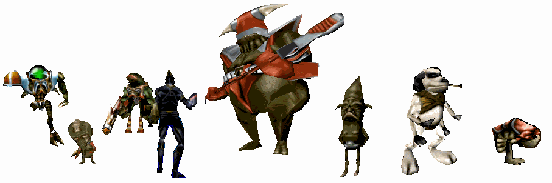

Dynamic Plane Shifting BSP Traversal
Stan Melax - 2001The downloadable zip file: BSPdemos2001.zip contains two technical demos (melaxbsp.exe and melaxcsg.exe) that show interaction and geomod using bsp trees. See the readme, help, and cfg files in the zip file for more information about the demos. Try hitting the 'b' key when running the CSG demo to have some fun.
The collision detection of swept volumes is done using bsp plane shifting and the csg boolean operations is done by tree merging. The academic paper Dynamic Plane Shifting BSP Traversal, from GI2000, explains the collision technique for moving objects. A 2001 gamastra article elaborates on the collision detection in video game settings. Apparently, there's a gdc presentation (but the slides aren't visible).
- GI Abstract: Interactive 3D applications require fast detection of objects colliding with the environment. One popular method for fast collision detection is to offset the geometry of the environment according to the dimensions of the object, and then represent the object as a point (and the object's movement as a line segment). Previously, this geometry offset has been done in a preprocessing step and therefore requires knowledge of the object's dimensions before runtime. Furthermore, an extra copy of the environment's geometry is required for each shape used in the application. This paper presents a variation of the BSP tree collision algorithm that shifts the planes in order to offset the geometry of the environment at runtime. To prevent unwanted cases where offset geometry protrudes too much, extra plane equations, which bevel solid cells of space during expansion, are added by simply inserting extra nodes at the bottom of the tree. A simple line segment check can be used for collision detection of a moving object of any size against the environment. Only one BSP tree is needed by the application. Successful usage within commercial entertainment software is also discussed.